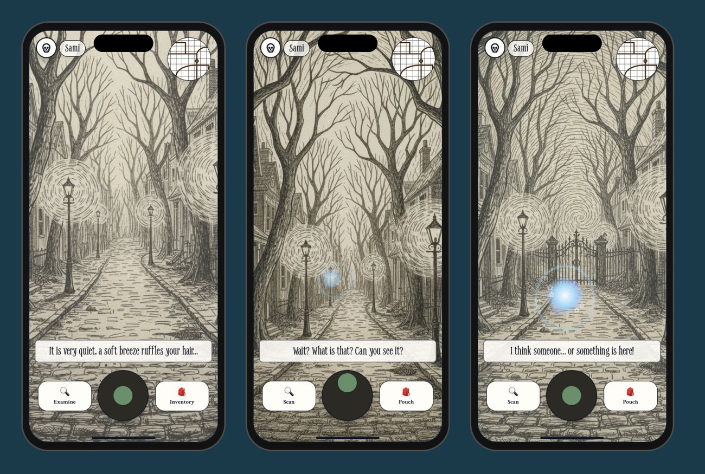
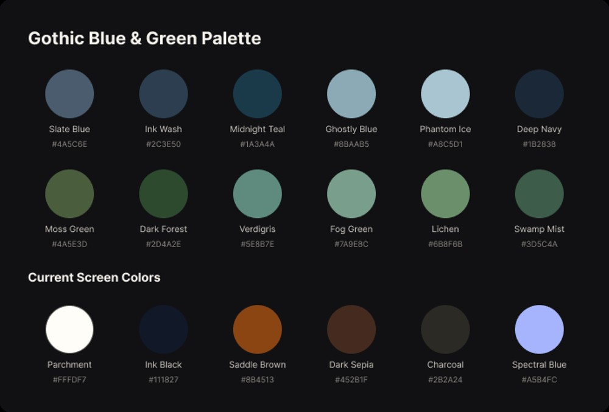
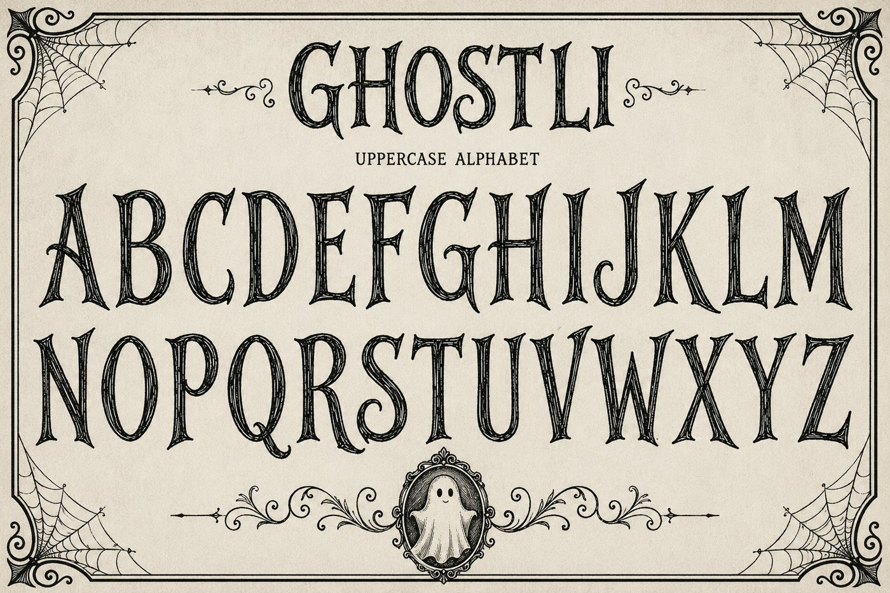
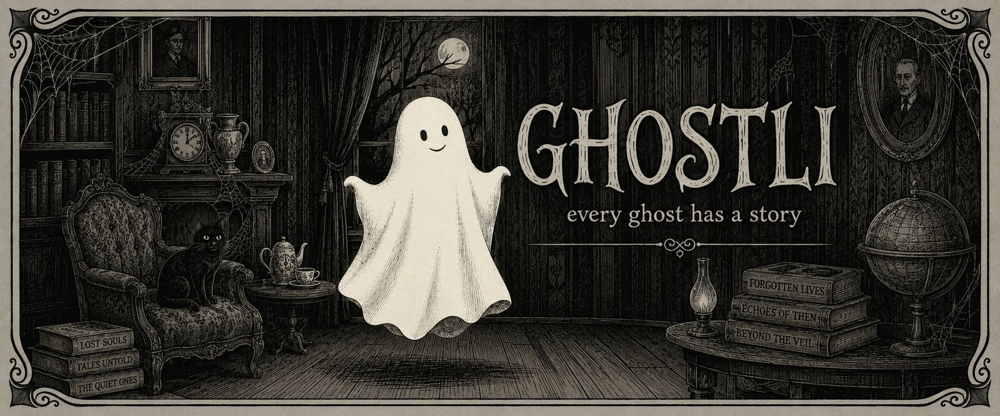
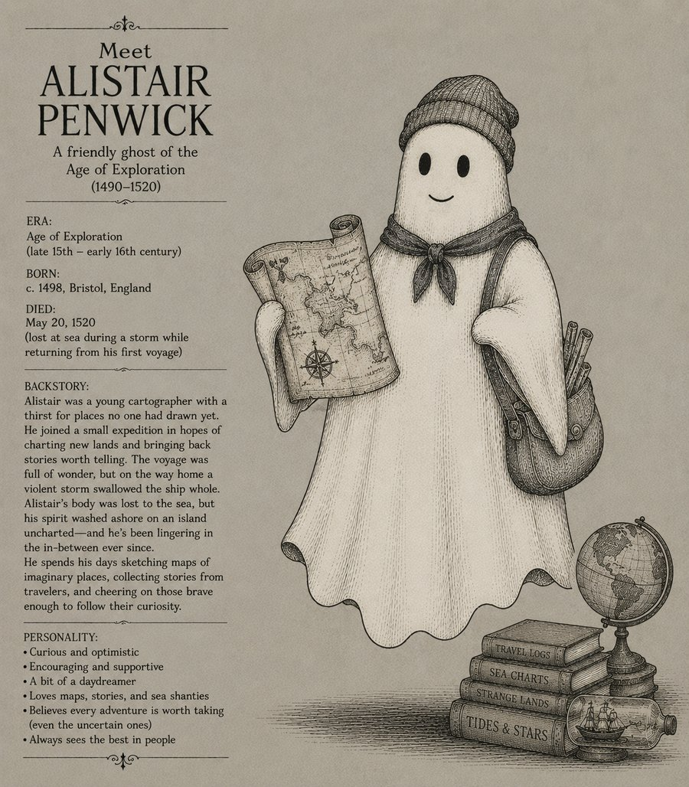
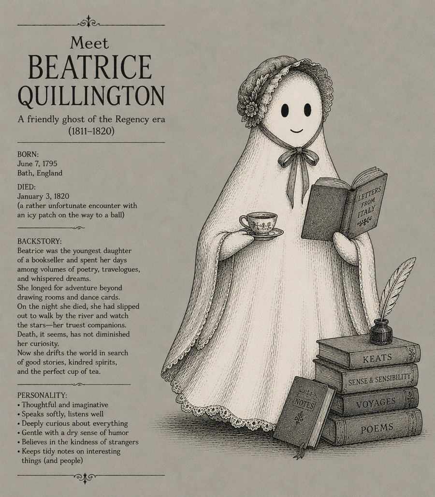
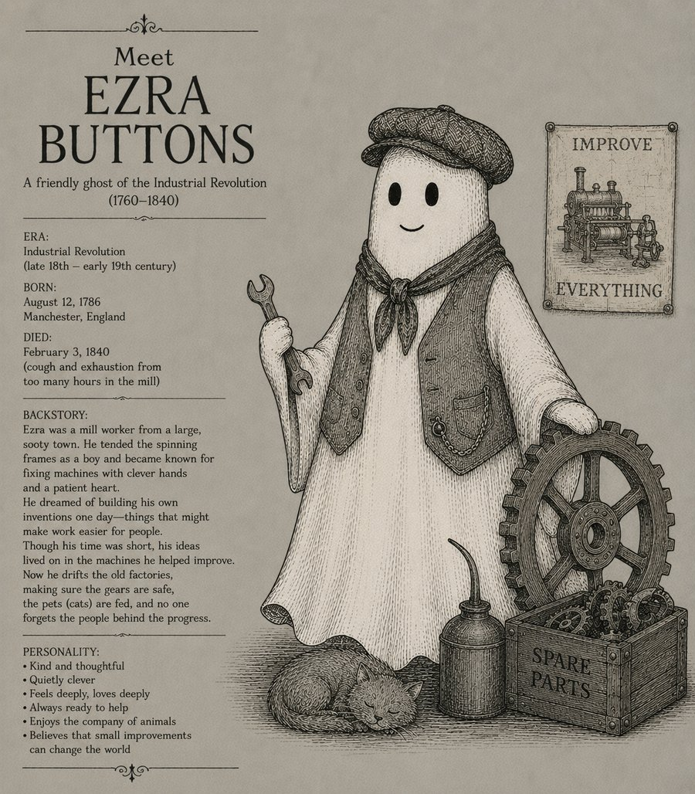
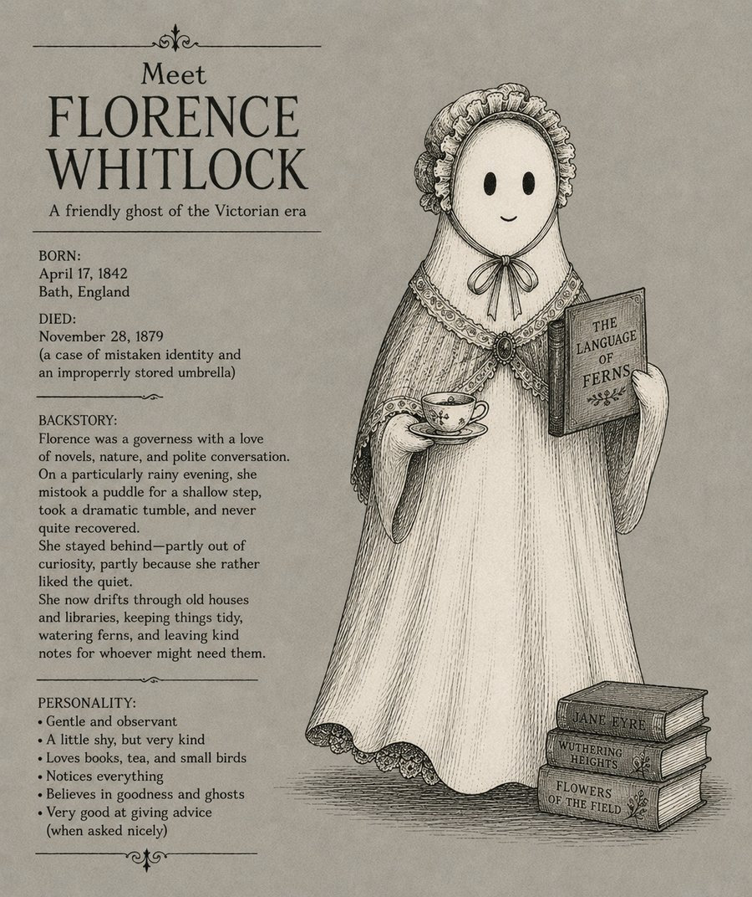
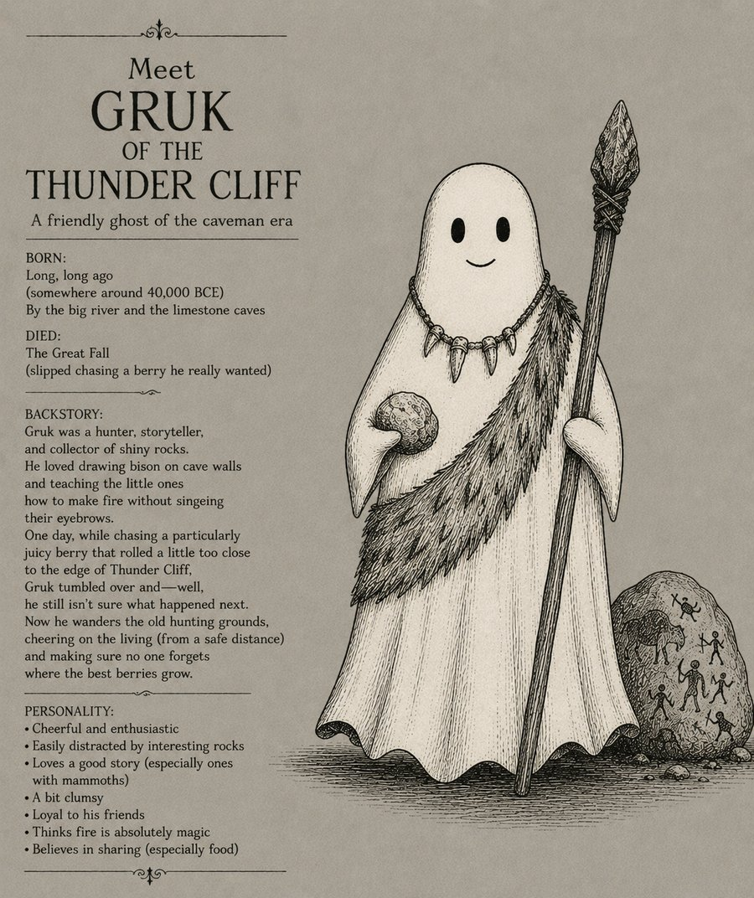
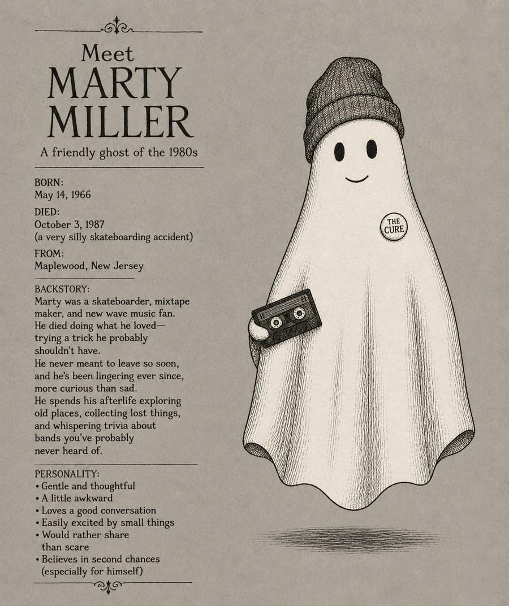

Generative AI has rapidly become part of modern product development — but most conversations focus on replacing creative work rather than improving it. I wanted to answer a different question.
How might AI become a collaborative design partner that accelerates product discovery while leaving product strategy, UX, and decision-making firmly in human hands?
Rather than experimenting with prompts in isolation, I decided to build a real product from the ground up using AI throughout the entire product lifecycle. The result became Ghostli — a family-friendly adventure game centered on exploration, storytelling, and empathy. More importantly, it became an experiment in how AI can augment, not replace, the work of product designers.
The product problem
Location-based games have become enormously popular, yet most share the same mechanics: capture, collect, battle, upgrade. Few encourage curiosity, storytelling, or emotional connection.
At the same time, building a world filled with thousands of meaningful characters is prohibitively expensive for a small team. That led to two product questions: how might we create a game that encourages exploration instead of combat — and how might AI enable a small team to build an expansive world full of unique characters and stories?
Product vision
Ghostli was designed around four guiding principles.
I
Encourage exploration
Players should be curious about discovering new places and new characters.
II
Foster empathy
Ghosts aren't enemies. Each one has a story worth understanding.
III
Design for families
The game should feel mysterious, not frightening. No horror, no violence, no graphic imagery.
IV
Meaningful progression
Players progress by solving problems, helping ghosts, and crafting tools — not defeating enemies.
My role
As Product Designer, I led both product strategy and design — and, unlike traditional design projects, I was also responsible for deciding where AI should and shouldn't participate in the process.
Product vision
AI workflow design
UX strategy
Gameplay design
Information architecture
Prompt engineering
Screen design
Product roadmapping
Discovery
The project began with one simple sentence: players catch ghosts. Everything else remained undefined.
I reviewed existing location-based games — Pokémon GO, Pikmin Bloom, Monster Hunter Now, Geocaching — and found a common thread. Players enjoyed exploration but often described gameplay as repetitive, overly focused on grinding, lacking meaningful narrative, and centered on collection rather than connection. That reinforced our belief that storytelling could become Ghostli's differentiator.
Rather than asking ChatGPT to design the game, I treated it like a product teammate — asking it to expand gameplay ideas, identify missing systems, recommend development tools, create a roadmap, and generate visual concepts. Those outputs became starting points, not final decisions.
AI expanded the solution space. Rather than producing one answer, it produced dozens. My role shifted from creator to curator.
Instead of asking "What should we build?" I began asking "Which of these ideas creates the best player experience?" — the defining lesson of the project.
AI decision matrix
Throughout the project I intentionally separated AI-generated work from human decision-making.
Activity
AI
Human
Brainstorming
✓
✓
Story generation
✓
✓
Concept expansion
✓
✓
Product vision
—
✓
UX strategy
—
✓
Product prioritization
—
✓
Gameplay balance
—
✓
Navigation design
—
✓
Final product decisions
—
✓
AI accelerated exploration. Human judgment created the product.

The core exploration loop: lighting the path, noticing a presence, and closing in on a ghost encounter — narrative pacing carried entirely through illustration and text, no combat UI
From vision to strategy
The original concept envisioned Ghostli as an augmented reality game layered over the real world.
As we explored implementation, a significant challenge emerged: a true location-based experience required commercial mapping services, GPS infrastructure, and geospatial APIs. For a two-person team, that represented substantial cost and would consume time better spent validating the core gameplay experience.
Rather than asking "How do we build AR?" I reframed the problem: what experience are players actually coming for? The answer wasn't augmented reality. It was discovering unique ghosts, uncovering their stories, solving puzzles, and progressing through a whimsical world. Once we separated the core gameplay from the technology delivering it, the roadmap became much clearer.
Strategic pivot: Couch Mode
Instead of delaying development until a complete AR experience became feasible, I proposed launching with a fully playable virtual world — every core mechanic, playable from home.
Reduced technical risk
Removed expensive mapping integrations from the MVP.
Faster validation
Allowed us to test gameplay before investing in infrastructure.
Better accessibility
An experience equally enjoyable for players with limited mobility, chronic illness, younger children, or anyone unable to spend extended time outdoors.
Accessibility shouldn't be an alternative experience — it should be another great way to experience the product.
Product roadmap
Separating gameplay from technology allowed the roadmap to evolve naturally, in two phases.
MVP
Couch Mode
Focus: validate the core gameplay loop.
Virtual world exploration
AI-generated ghosts
Procedural storytelling
Crafting & inventory
Ghost collection
Puzzle solving
Future release
Explore Mode
Once gameplay is validated, Ghostli expands into the physical world.
GPS exploration
Map APIs
Real-world landmarks
Walking progression
AR ghost encounters
Location-specific storytelling
Designing with AI
AI supported several parts of the creative process — product development, visual exploration, and initial concepting.
Initial art prompts explored a style inspired by Edward Gorey. As prompts became more detailed, AI produced increasingly expressive ghost concepts with stronger personalities and environmental storytelling.
Rather than relying on AI-generated UI, I transitioned into Figma, where I designed the product architecture, navigation, and gameplay experience by hand. AI generated ideas. UX transformed them into product.

The Gothic Blue & Green palette used to keep AI-generated art direction consistent across ghost and environment concepts
The Ghostli typeface
The same AI-assisted process extended to the product's visual voice: I used AI to sketch a custom, hand-lettered display alphabet, then rebuilt it into a working typeface.
Early art direction established a gothic, hand-drawn tone for the ghosts and environments. I wanted the wordmark and headings to share that feel rather than pairing illustrated characters with a generic system font. I used AI image generation to iterate on a full uppercase alphabet in that style, then took the strongest letterforms out of the image generator entirely — rebuilding each glyph as clean vector outlines, correcting the baseline and stroke-weight inconsistencies typical of AI-generated lettering by hand, and compiling the set into Ghostli, a working TrueType (.ttf) font.
As a real font file rather than a rendered graphic, Ghostli now drops directly into Figma, marketing assets, and the game itself — scalable and usable in any string, not locked to a single exported image.

The finished Ghostli uppercase specimen — AI-sketched, then rebuilt letter by letter into a working TrueType character set

The typeface carrying the wordmark and tagline across marketing, alongside the same illustrated world it was designed to match
Beyond collection
If every ghost is unique, should discovering one feel like collecting a Pokémon — or telling a story?
Traditional collection games encourage players to acquire increasingly rare characters, which then become static inventory items. Ghostli takes a different approach: each ghost is procedurally generated with its own appearance, personality, history, and the circumstances surrounding its discovery. Because no two encounters are exactly alike, the experience itself becomes something worth sharing.
"Look what I collected" becomes "You'll never believe who I met."
That distinction transforms unique ghosts from collectible assets into memorable experiences — and naturally creates opportunities for social interaction: personal ghost journals, shared encounters, trading favorite discoveries, and community events featuring rare ghosts.
Player explores→Discovers unique ghost→AI creates a unique story→Player shares encounter→Community becomes curious→More exploration
Meet the cast
Every ghost is generated against the same template — era, backstory, personality, and props — so a growing cast still reads as one coherent world.

Age of Exploration · c. 1498–1520
Alistair Penwick
A young cartographer lost at sea on his first voyage — still sketching maps of places no one's charted, and cheering on anyone brave enough to follow their curiosity.

Regency Era · 1795–1820
Beatrice Quillington
A bookseller's daughter who longed for adventure beyond drawing rooms. Now drifts the world in search of good stories, kindred spirits, and the perfect cup of tea.

Industrial Revolution · 1786–1840
Ezra Buttons
A mill worker known for fixing machines with clever hands and a patient heart. Still makes sure the gears are safe and the factory cats are fed.

Victorian Era · 1842–1879
Florence Whitlock
A governess who loved novels, nature, and polite conversation. Drifts old libraries, keeping things tidy and leaving kind notes for whoever might need them.

Caveman Era · c. 40,000 BCE
Gruk of the Thunder Cliff
A hunter, storyteller, and collector of shiny rocks. Wanders the old hunting grounds, cheering on the living from a safe distance and minding where the best berries grow.

The 1980s · 1966–1987
Marty Miller
A skateboarder and mixtape maker who never meant to leave so soon. Spends his afterlife collecting lost things and sharing trivia about bands you've probably never heard of.
Challenges
The project also surfaced AI's limitations.
Visual consistency
AI struggled to maintain a consistent visual style across generations — recognizable art direction required prompt refinement and human curation.
Product judgment
AI generated hundreds of gameplay ideas; many conflicted with the product vision. Feature prioritization remained entirely human.
UX design
AI consistently struggled with navigation, information hierarchy, interaction design, and accessibility — traditional UX methods remained essential.
Responsible AI: Ghostli is designed for children and families. Future AI implementation includes prompt guardrails, family-friendly language, human moderation, story validation, and safe visual generation. AI should expand creativity — not introduce unpredictability.
Reflection
Ghostli fundamentally changed how I think about AI.
When I started, I believed AI's greatest strength would be generating content. Instead, I discovered its greatest value was expanding the design space — consistently generating more ideas than I could have explored alone, though the quality of those ideas depended entirely on the product direction I provided.
The project also reinforced a lesson about product design itself. I initially viewed augmented reality as the defining feature. As technical constraints and accessibility considerations emerged, I realized players weren't coming for AR — they were coming for discovery, storytelling, and meaningful interactions.
The first version of a product should validate the experience — not every feature imagined for the final product.
AI amplifies product thinking
Its greatest value isn't replacing designers — it's helping teams explore more possibilities faster.
Strong product vision creates better AI
The clearer the product principles became, the stronger AI's contributions became.
Accessibility improves products for everyone
What began as a budget-driven technical pivot became a design decision that expanded who could enjoy the game.
Community creates lasting engagement
By making every ghost unique, the product evolves from a collection game into a storytelling platform players build together.